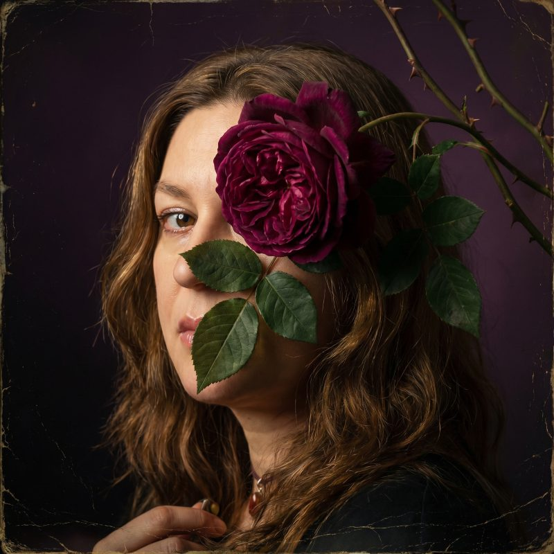

Ich bin Maren Hoffmann, Psychologin mit Masterabschluss in Prävention und Gesundheitspsychologie. Seit vielen Jahren arbeite ich mit Menschen in existenziellen Notlagen, in Gruppen, in Einzelbegleitung, im sozialen Brennpunkt.
Ich arbeite traumasensibel, menschenzugewandt, ohne spirituelle Überhöhung.
Ich habe gelernt, was Psychologie weiß. Und was Psychologie nie alleine wissen wird.
Heute trage ich beides:
die Klinge der Reflexion
und die Schale des Rituals.
Was mich zu Lux Occulta bringt, ist keine Licht-und-Liebe-Pose. Es ist die tiefe Überzeugung, dass rituelle Arbeit und Gesellschaftskritik untrennbar verbunden sind.
Dass Rituale nicht zur Ware werden dürfen. Dass Wissen geteilt werden sollte, nicht verkauft.
Ich arbeite nicht mit Konzepten wie „Energie" und „Transformation", um Menschen das Gefühl zu geben, sie müssten sich nur genug entwickeln, um endlich gut zu sein.
Ich arbeite mit Körper, Sprache, Symbol, Reflexion, in aller Unvollkommenheit, mit aller Tiefe.
Ich verspreche keine Heilung.
Ich halte den Raum, in dem sie geschehen darf.
Wer im Kreis sitzt, ist nicht allein.